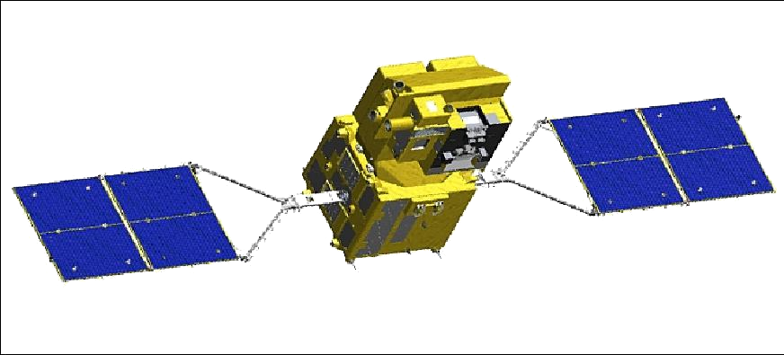
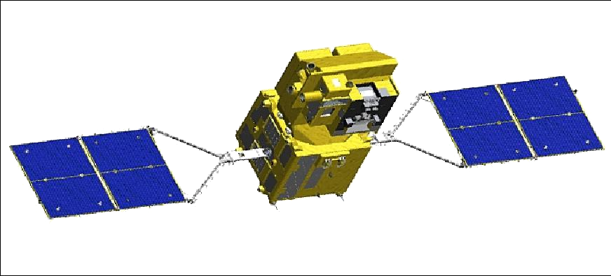

Go to the ISS
The INTERNATIONAL SPACE STATION
We have been looking up at the ISS for over 20 years of its service, finally, it is time that the ISS looks down at its home planet. The ISS provides a unique vantage point for observations of Earth and space.
- Compared with typical satellites used for Earth observation, the ISS provides better spatial resolution and variable lighting conditions.
- The ISS can improve disaster response and advance studies of agriculture, water quality, natural resources, the atmosphere, maritime tracking, land use, and much more.
- The ISS also serves as a technology testbed, a platform for studying elusive particles, and a conduit to resource sustainability and the democratization of imaging data.
The Pale Blue Dot
Thirty years ago, the furthest man-made object from the Earth, Voyager 1, swiveled around and peeked back at the Solar system through its digital eyes. The image it sent back changed our perspective of the Earth forever. There lay our home, Earth, like a small speck of dust suspended on a sun beam. It showed us how small and insignificant we are compared to the vast cosmic background. It united humanity like never before. Perhaps no one better than Carl Sagan could have put "The Pale Blue dot" into perspective.


 
